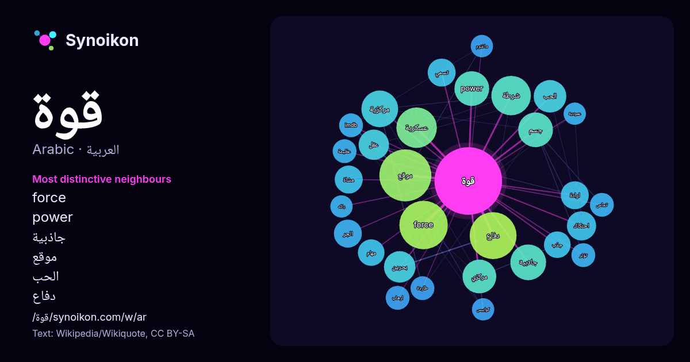

العربية · كلمة شائعة
قوة
“power” · الكلمات الموجودة حولها في 860 ورودًا من ويكيبيديا, Wikiquote.

الجيران الأكثر تميّزًا
- force 34×
- power 18×
- جاذبية 16×
- موقع 13×
- الحب 13×
- دفاع 12×
- مركزية 12×
- احتكاك 12×
- الجر 12×
- شرطة 11×
- مركزي 11×
- عقل 11×
- ارادة 11×
- بحرين 11×
- عسكرية 9.7×
- جذب 9.6×
- مشاة 9.2×
- جسم 9.1×
- طاردة 8.9×
- imdb 8.7×
× = كم مرة أكثر مما في نصوص ويكيبيديا العامة.
الجيران الأكثر تكرارًا
- موقع 38
- force 33
- دفاع 31
- عسكرية 23
- شرطة 22
- قوات 21
- تكون 20
- خاصة 20
- مركزية 19
- جاذبية 18
- power 17
- جسم 17
- مركزي 16
- الحب 15
- حياة 15
- خارجية 15
- امن 14
- بحرين 14
- جيش 14
- قوي 14
في السياق
- محصلة القوى المطبقة على شخص يقف على الأرض هي الصفر، وذلك لأن هناك قوة عمودية (قوة تأثر) مصدرها الأرض وتتجه باتجاه الشخص الواقف وتعادل هذه القوة قوة الجذب Wikipedia snippets · قوة
- واحدة فقوة المؤثر قوة داخلية، وإن لم يكونا كذلك فهي خارجية. مثال القوة الخارجية قوة جاذبية الأرض. أما القوة الخارجية فهي أربعة صنوف: قوة الشد والانضغاط واللي Wikipedia snippets · قوة خارجية
- قرار المحكمة له قوة الأمر المقضي به أو يدخل حيز التنفيذ عندما لا يكون عرضة لأي وسيلة للطعن (بما في ذلك الاستئناف) أو بسبب استنفاد سبل الانتصاف أو انتهاء Wikipedia snippets · قوة الأمر المقضي به
- في الرياضيات، قوة كاملة (الإنجليزية: Perfect power) هي عدد طبيعي يكون نتيجة ضرب عدد طبيعي آخر في نفسه عددا من المرات. "معلومات عن قوة كاملة على موقع mathworld Wikipedia snippets · قوة كاملة
- هذه قائمة الدول حسب قوة العمل تعتمد أساساً على كتاب حقائق العالم. "COUNTRY COMPARISON :: LABOR FORCE". cia.gov. مؤرشف من الأصل في 2018-10-07. اطلع عليه Wikipedia snippets · قائمة الدول حسب قوة العمل
- ميكانيكا الموائع قوة فرويد – كريلوف (بالإنجليزي: Froude–Krylov force) هي قوة ديناميكية ناتجة من تغير الضغط بواسطة الموجات المستقرة . يمكن حساب قوة فرويد – كريلوف Wikipedia snippets · قوة فرويد – كريلوف
- قوة التماس هي قوة الجسم المادي التي تمكنه من التأثير في جسم آخر عند حدوث تماس بينهما في موضع يقال له نقطة التماس. Plesha, Gray, and Costanzo (2010). Engineering Wikipedia snippets · قوة تماس
- قوة التنفيذ Force of Execution (الإنجليزية) تعديل - تعديل مصدري - تعديل ويكي بيانات قوة التنفيذ (الإنجليزية: Force of Execution) هو فيلم حركة تم إنتاجه Wikipedia snippets · قوة التنفيذ (فلم)
كلمات أخرى
- أغنية
- إله
- تاريخ
- جبل
- جرس
- جزيرة
- جسر
- حديقة
- حصان
- حقيقة
- حياة
- خبز
- خريطة
- خريف
- ذهب
- زمن
- ساعة
- شاي
- شتاء
- صحة
- صحراء
- صمت
- صيف
- طبيعة
- طريق
- طعام
- ظل
- عائلة
- عاصفة
- عسل
- علم
- عمل
- غابة
- فن
- قطار
- قطة
- قلب
- كلب
- لغة
- ماء
- مال
- مدينة
- مرآة
- مطر
- ملح
- مناخ
- موت
- نجم
- والدة
حُسبت مسبقًا في 2026-10-09 بالإعدادات الافتراضية (±5 كلمات، مدوّنة متوسطة). يمكن للخريطة التفاعلية تحديثها ببيانات حية.
واجهة مترجمة آليًا؛ نرحب بالتصحيحات.